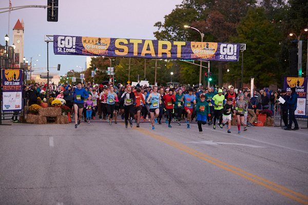

ARLINGTON, Virginia – The Road Runners Club of America (RRCA) is pleased to announce the first round of Runner Friendly Community designations for 2014, which includes: Belleville, IL; Richmond, VA; Rockwall, TX; Safety Harbor, FL and Spokane, WA.
These communities have shown that they meet the program’s criteria, which includes community infrastructure, community support, and local government support for running. Each community has an infrastructure that can foster physical activity in a safe environment. They have a proven track record that organizations and businesses work together to promote running as a healthy exercise and sport. With the most important criteria being, there are positive relationships between the running community and local government.
The goal of the RRCA’s Runner Friendly Community program is to shine a national spotlight on communities that standout as runner-friendly and provide incentives and ideas for communities to work towards becoming runner friendly communities. Runner Friendly Communities can also increase the quality of life, improve physical activity for residents as outlined in the National Physical Activity Plan, and provide for increased economic impact for the community.
Congratulations to the following RUNNER FRIENDLY COMMUNITIES:
Belleville, IL – Belleville is the most populated city in the Metro-East region of the St. Louis Metropolitan Area and in Southern Illinois. The city has a population of 43,765, and due to its close proximity to Scott Air Force Base, the population receives a boost from military and federal civilian personnel, defense contractors, and military retirees.
Belleville has the infrastructure to support the growth in running’s popularity. It boasts a vast network of sidewalks along with running and biking trails that make it easy for a runner to run safely in the community. The Richland Creek Greenway Trail is a 2-mile, multi-purpose, pathway meandering through the heart of Belleville. The trail is accessible at several park locations and also connects to the 6-mile MetroLink trail, which runs to the local community college. Belleville also boasts 125-miles in sidewalks for running use. The longest stretch of sidewalk is a 10-mile run down beautiful Main Street. The city has plans to extend their trail network as well.
The Belleville Running Club (BRC) is an important pillar of the running community. In addition to their regular weekly group runs, BRC has been involved in the Belleville Chili Cook-off, enters teams in the annual River to River Relay, and are active in the city’s adopt a trail program. BRC hosts an annual Couch to 5K training program to prepare new runners for their first 5K at the local Law Day Run.“Our community recognizes the benefits of actively promoting physical fitness, including running as part of a healthy lifestyle,” commented Mark W. Eckert, Mayor of the City of Belleville. “The City of Belleville has a strong record of support for the local running community and we are dedicated to growing a healthy society.”
Community leaders who provided support and letters of recommendation include Toby Trapp, President of Belleville Running Club; Mark Eckert, Mayor of Belleville; Andria Powell, Owner of Circa; Susan Ivy, Office Manager, Chiro-Med; Anne Thomure, Director of Hospital and Community Relations, Memorial Hospital; Jim Schneider, Director of Community Development for the City of Belleville.
Richmond, VA – Richmond demonstrates how collaboration and partnerships can help to make a community runner friendly. As the Capital of Virginia, the Metro Richmond Area is home to over 1.2 million residents. In the Richmond area, there are a variety of trails, parks, and pedestrian networks in the city and surrounding counties that are used year-round by runners and walkers. The Virginia Capital Trail, which will eventually link Williamsburg and Richmond, is in the final stages of completion and offers miles of trails for runners, walkers, and bikers.
There are a variety of runner-friendly businesses located throughout the community. Specialty stores such as Roadrunner Running Store, Endorphin Fitness, Lucky Foot and 3 Sports cater to runners and host daily and weekly group runs starting and ending at their respective locations. Bon Secours Richmond Health System and HCA Virginia Health System are also dedicated to serving runners and helping them stay fit and healthy. Fitness centers such as the YMCA, American Family Fitness, and ACAC work closely with runners on a daily basis and also sponsor some of the biggest running events in Richmond. Coffee shops and restaurants, such as Crossroads Coffee & Ice Cream, Starbucks on Grove Avenue, and Hardywood Park Brewery, often serve as pre- and post-run meeting spots and are safe places for runners to get out of bad weather or fill a water bottle during a run. Ukrop’s Homestyle Foods and Martin’s Food Markets also support and sponsor events as well as offer healthy eating and nutrition clinics for runners.
The RRCA member Metropolitan Richmond Sports Backers works closely with the Richmond Road Runners Club (RRRC), and other organizations such as schools, local governments, and other nonprofit organizations to promote running. Both organizations are active in supporting local youth running programs by hosting and providing grants to programs including Kids Run RVA. The Sports Backers and RRRC also have a strong relationship with local media. There is in-depth coverage of running events in the daily newspaper and on local television stations, as well as a number of websites and print outlets committed to coverage of the local running scene.
Richmond hosts numerous running events every year, including the Anthem Richmond Marathon, American Family Fitness Half Marathon, and Ukrop’s Monument Avenue 10k. Collectively these events attract thousands and thousands of runners and are great community celebrations of running and fitness. The events bring together the support of the Sports Backers, Richmond Road Runners Club, local governments, area businesses, as well as clubs, teams, and individuals. They serve as shining examples of the broad community support available for running in Richmond.
“Richmond is an ideal candidate for the recognition as a Runner Friendly Community, and I unequivocally and wholeheartedly support this nomination,” commented Cynthia Newbille, Richmond City Council Member. “Running is an integral part of our community that has helped our residents lead healthy, happy lifestyles.”
Community leaders who provided support and letters of recommendation include Cynthia I. Newbille, Richmond City Council member; Ned W. Massee, Vice President, MeadWestvaco; Jon Lugbill, Executive Director, Metropolitan Richmond Sports Backers
Rockwall, TX – Home to the RRCA member Rockwall Running Club, Rockwall hosts over twenty-five running and triathlon events annually and is home to the US Toyota Triathlon Championships and the Patriot Half Marathon. While Rockwall is considered part of the larger Dallas/Fort Worth Metroplex, it is a community of 38,000 residents with a dedicated running community. Emerald Bay Park opened in Rockwall in January 2008 and is highlighted by a lighted aerial fountain in the middle of the pond, which is surround by a walking and running trail.
Last year over 8,000 residents participated in running events in Rockwall. The passion for running is evident in the local businesses that have donated hundreds of thousands of dollars to support running events in recent years. The popularity of running in the community has also been reflected in the tremendous growth of the Rockwall Running Club, from just five members in 2009 to two hundred members today. During the same time, the number of road races the club hosts has grown from one to twenty-five, including the only half marathon in the Dallas/Fort Worth market in the month of May. Youth running clubs are supported at five of the eleven elementary schools in the area, and there are three summer track programs for youth.
To support local races, the local government reviews safety procedures for all events, provides free traffic cones, and community patrols provide logistical support. Rockwall print and broadcast media regularly make an effort to promote and cover all events.
“To say Rockwall is a Runner Friendly Community is an understatement,” commented Casey Allen, City of Rockwall Parks & Recreation Manager. “From the first time you visit and take a run with us, you’re a member of our running family. It doesn’t matter if your 5 years old or 80 years old, there is someone to run with.”
Community leaders who provided support and letters of recommendation include Billy Self of the Texas Novachem Corporation; Gregg MacInnis of Cherry Financial Partners; Case Allison, City Parks and Recreation Manager; Ruthie Cole of the Rockwall Running Club
Safety Harbor, FL – With year-round, favorable weather along with safe, well maintained, sidewalks and streets, Safety Harbor is in many ways the ideal community for a runner to call home. The harbor or bay of the same name on which Safety Harbor is located is the nearly landlocked far northwestern extension of Tampa Bay and is located on the west side of that bay. The city has a population nearly 17,000 residents and is home to several running clubs, including the RRCA member West Florida Y Running Club.
Safety Harbor is home to the Bayshore Linear Greenway Recreational Trail that was developed in 1998 to provide a measured recreational path for walkers, joggers, and cyclists. The trail begins at the Marina fountain and includes distance markers, scenic views of Old Tampa Bay, and water fountains near benches.The trail connects to the Ream Wilson trail to the south and it connects to Phillipe Park, a shady county park to the north. There is an extensive network of sidewalks in the community as well. The city has recently added three flashing crosswalks to provide for safer street crossings.
The local importance of running and fitness is demonstrated in Safety Harbor becoming a Let’s Move City that is dedicated to solving the problem of childhood obesity. Local officials and city recreation staff developed goals to promote the health of residents to earn the designation. The city has youth running programs that operate annually including the Healthy Strides, Speed & Agility, and Track program. They also host running related summer camps.
The Safety Harbor business community is supportive of local runners. Lola’s Running specialty store provides water stops along the Bayshore trail for runners. Nolan’s Pub along with the Safety Harbor Resort & Spa has sponsored events. Additionally, Fit Life Foods often donates healthy snacks for races.
“Not only does Safety Harbor have beautiful, safe places to run, it is a community of runners,”noted Lisa Kothe, Library Director for Safety Harbor Public Library. “Any time of the day, even in the heat of a Florida summer, runners can be spotted along Bayshore Boulevard.”
Community leaders who provided support and letters of recommendation include: Lisa Kothe, Safety Harbor Library Director; Nick Zivolich, CEO Best Damn Race; Craige Davide, Owner Nolan’s Pub; Fred Rzymek, Owner, Design Sports.
Spokane, WA – The City of Spokane is located on the Spokane River in Eastern Washington and is 92 miles south of the Canadian border. With a population of 208,916, Spokane is the second largest city in the State of Washington. The Spokane area offers an abundance of outdoor activities that can be enjoyed in outlying natural areas that cater to runners.
In 1907, Spokane’s board of park commissioners retained the services of the Olmsted Brothers to draw up a plan for Spokane’s parks. Today, Spokane has a system of over 87 parks totaling 4,100 acres. Riverfront Park, created after Expo ‘74, is 100 acres in downtown Spokane, and the site of some of Spokane’s largest events including the Lilac Bloomsday Run Post Race Celebration. The park is a popular site for runners that includes the The Joy of Running Together sculpture by David Govedare installed in 1984. This steel sculpture depicts runners of all kinds and celebrates the Spokane tradition of Bloomsday.
A more active way to see natural sites in the Spokane area includes travelling the Spokane River Centennial Trail, which features over 37 miles of paved trails running along the Spokane River from Sontag Park in west Spokane to the east shore of Lake Coeur d’Alene in Coeur d’Alene, Idaho. This trail continues on for 24 miles as the North Idaho Centennial Trail in Idaho.
Each May, Spokane plays host to the Lilac Bloomsday Run, one of the largest road races in the country, regularly attracting 50,000 participants annually. In 2014, the race will serve as the RRCA’s National 12 K Championship. The RRCA member Bloomsday Road Runners Club (BRRC) was founded by the Bloomsday Run and has developed into a solid group of running enthusiasts devoted to the promotion of a variety of running events in Spokane. The BRRC will host the 56th Annual RRCA National Convention May 1-4, 2014.
Local businesses are very supportive of the Spokane running community. The local Starbucks allows runners to use their bathrooms and they provide ice water to runners as needed. The local club has been working with the regional Starbucks manager to encourage their corporate headquarters to work with the RRCA to designate all stores as Runner Friendly Businesses. Locally, Starbucks has donated coffee and tea at many local running events. The local running store, Runner’s Soul, allows use of their facilities to runners in need while out on the run.
“The City of Spokane, and the Spokane Fire Department (SFD) in particular, has been involved in community healthy living initiatives for over 40 years,” comment Brian Schaeffer, assistant fire chief of the City of Spokane. “Spokane’s mantra is ‘Near Nature, Near Perfect’ and our commitment to the healthy outdoor lifestyle is reflected daily throughout our community’s miles of trails, roads and formal races. I am extremely proud to be a part of our community, and am humbled that Spokane is being considered for the RRCA recognition.”
Community leaders who provided support and letters of recommendation include: Brian Schaeffer, Assistant Fire Chief; Sergeant JD Anderson, Special Events Unit Supervisor, City of Spokane Police Department; Christopher Guidotti, Park Manager, Riverside State Park; Christopher Morlan, Architect and A1A Head Coach; Nate Kinghorn, Runners Soul Spokane

Looking good crossing the finish line!
Leave a comment